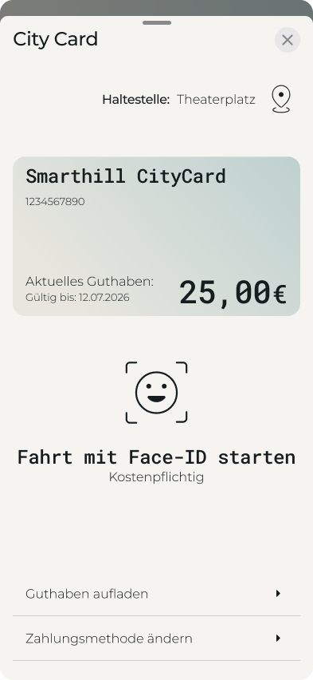
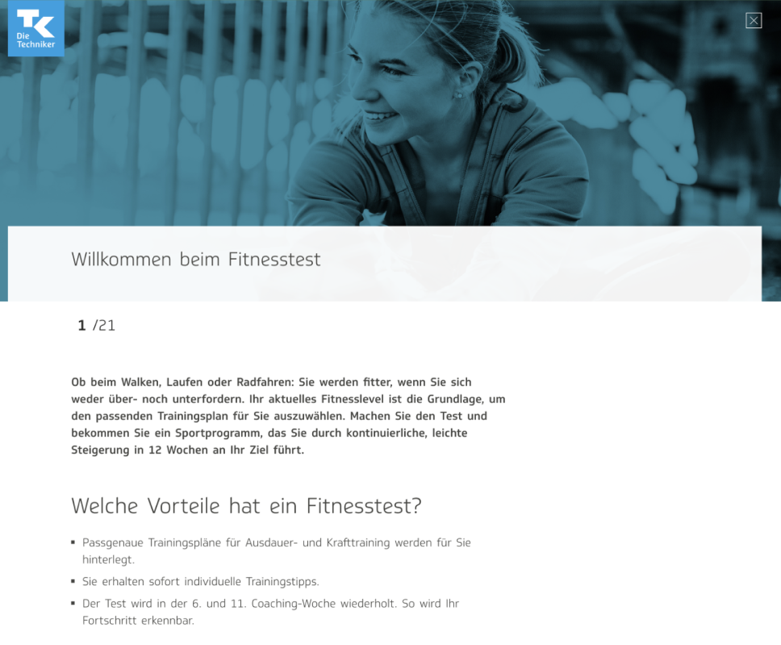

My Design Work

Engagement by Design
How I Built a 4.5 Star Coaching App
Highlights
- Implemented Multimodal Health Coaching for Germanys largest insurance company
- Reached a 4.5 Star-rating in Apple and Android App-Stores
- Scored an AttrakDif of at least 2 in every user test
- Launched MVP within 1 year
- Reached 100.000 users within 3 years

Motivation by Design
How I Turned Nutrition Tracking into Meaningful Insights
Highlights
- Led UX design for the Nutrition Diary feature of the TK-Coach App
- Applied the Healthy Eating Index to assess and visualize nutrition quality
- Created prototypes and tested iteratively to validate usability and clarity
- Used progressive disclosure to deliver relevant, easy-to-digest information
Empathy by Design
How Research-Driven Personas Guided a More Engaging Coaching Experience
Highlights
- Conducted in-depth user research and interviews to uncover pain points, motivations, and engagement barriers within the existing stress coaching program.
- Developed key personas and design principles that guided a user-centered redesign focused on personalization, clarity, and improved user guidance.


A Process Book
UI Design & Design System

Efficiency by Design
How I Simplified Health Coaching Workflows
Highlights
- Led the UX redesign of a back-office system for telephone health coaching for Germanys largest insurance company
- Conducted user interviews and workshops to uncover inefficiencies and real usage patterns
- Developed decision-tree logic and role-based views to simplify navigation and reduce errors
- Delivered an efficient, user-centered tool that streamlined daily tasks and reduced the coaches’ workload

Guidance by Design
How I Made a 30-Minute Fitness Test Feel Effortless
Highlights
- Designed an intuitive flow for a 30-minute fitness assessment combining exercise guidance, progress tracking, and heart rate measurement.
- Enhanced user engagement through clear instructions, pacing, and motivational feedback.
- The test became a key motivator for users to start tailored training plans within the app, linking measurable progress with personalized guidance.